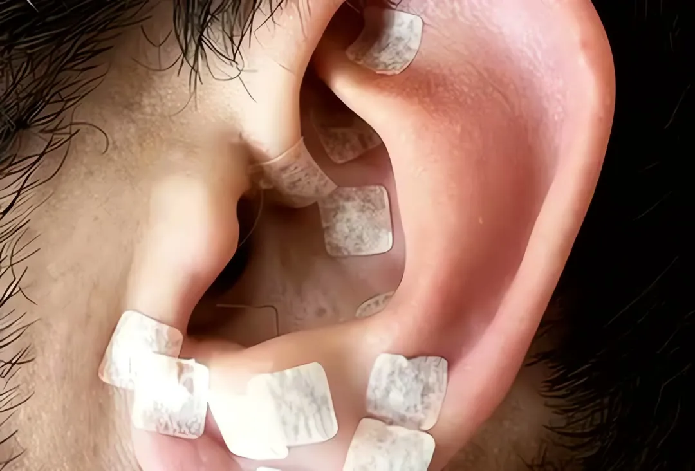
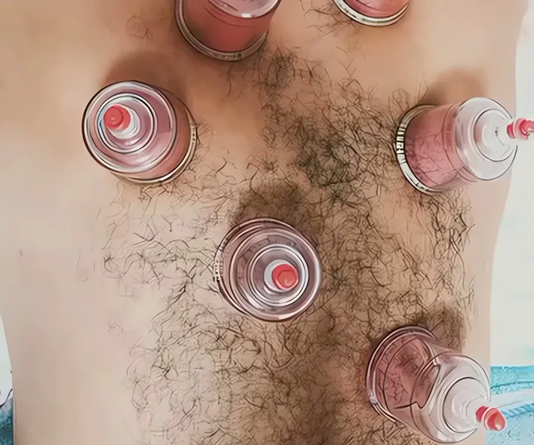

Início/Tratamentos/Auriculoterapia
Terapia integrativa · Orlândia
Auriculoterapia
Estímulos em pontos da orelha como recurso integrativo complementar, dentro de um plano pensado para você.
- Área
- Terapia integrativa
- Onde
- Na clínica e em casa
- Primeiro passo
- Avaliação individual
O tratamento
Atenção aos detalhes do cuidado
A auriculoterapia é uma prática que usa estímulos em pontos específicos da orelha. Pode entrar como recurso complementar em alguns planos de cuidado, de acordo com as necessidades e as condições de cada pessoa. A escolha da abordagem depende da avaliação individual.
- Atendimento feito pela Dra. Marina, fisioterapeuta (CREFITO-3 216312-F)
- Plano definido na avaliação, sem número de sessões prometido
Para quem
Pode ser indicado para
A indicação é confirmada na avaliação, depois de conhecer o seu histórico.
Quem tem interesse em práticas integrativas
Quem busca um recurso complementar
Quem quer conhecer a técnica
Quem tem indicação profissional para a prática
Passo a passo
Como é o atendimento
- 01
Conversa
Histórico, necessidades e objetivos.
- 02
Avaliação
Indicação da técnica e escolha dos pontos.
- 03
Aplicação
Estímulos feitos conforme a abordagem escolhida.
Antes de começar
Cuidados importantes
- Informe alergias e sensibilidade na região das orelhas.
- Conte sobre lesões, inflamações ou alterações na pele.
- Práticas integrativas não substituem tratamento médico.
Perguntas
Dúvidas sobre auriculoterapia
Como funciona a auriculoterapia?
A técnica usa estímulos em pontos específicos da orelha, seguindo critérios próprios da prática.
Usa agulhas?
Pode usar diferentes recursos de estímulo, conforme a abordagem. O método é explicado antes do atendimento.
Quantas sessões são necessárias?
A frequência depende da indicação, das suas necessidades e do plano definido na avaliação.
Posso fazer junto com a fisioterapia?
Em algumas situações, a técnica pode fazer parte do plano de cuidado. A compatibilidade é avaliada caso a caso.
Tem outra dúvida? Veja as dúvidas frequentes ou chame no WhatsApp.

Próximo tratamento
Ventosaterapia
Uma técnica complementar dentro de um plano de atendimento individual, com avaliação antes da primeira aplicação.
Saiba maisConheça essa forma de cuidado
Converse com a Clínica LEMAHE e agende a sua avaliação.